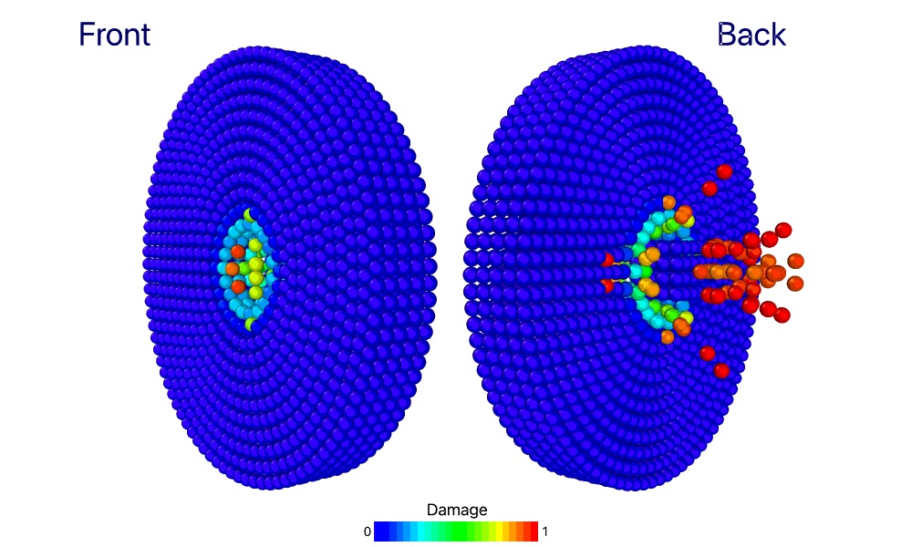

Examples
Tensile simulation of a bar
To simulate the tensile behavior of a bar using the PeriDyn package, you can follow these steps:
Activate the PeriDyn environment by running the following code from the PeriDyn package directory. This will activate the environment and install the required packages or install package first.
using Pkg
Pkg.activate(".")
Pkg.instantiate()Import the PeriDyn and PDMaterialPoints packages.
using PeriDyn
using PDMaterialPointsCreate the geometry of the material block using a Cuboid shape and a specified resolution. Then create a material generator using the created geometry and resolution. In this example, we create a bar with dimensions 20x5x5 mm and a resolution of 0.5 mm.
See Units in PeriDyn.jl for more information about units in PeriDyn.jl.
resolution = 0.5
x1, v1, y1, vol1, type1 = unpack(create(Cuboid([0 20; 0 5; 0 5]), resolution=resolution)) # mm
mat_gen1 = GeneralMaterial(y1, v1, x1, vol1, type1, 3.0*resolution; max_neigh=200)Define the material parameters such as Young's modulus (Es), Poisson's ratio (nu), density (den), and critical stretch (cstretch). Then create a bond-based material block using the specified material parameters:
Es = 70 # GPa
nu = 0.15
K = Es/3/(1-2nu)
G = Es/2/(1+nu)
den = 2.2 * 1000.0 # Kg/m3
cstretch = 0.15
mat_spec1 = BondBasedSpecific([K], [cstretch], [den])
# mat_spec1 = OrdinaryStateBasedSpecific([K], [G], [cstretch], [den])
block1 = PeridynamicsMaterial(mat_gen1, mat_spec1)Choose a solver for the simulation. In this example, we use the DSVelocityVerlet solver and set the number of steps (Steps), file write frequency (fwf), and neighbor update frequency (nuf):
solver = DSVelocityVerlet()
steps, fwf, nuf = 20000, 100, 10Define the boundary conditions for the simulation. Here, we fix the left part of the bar (y1[1, :] .< 4.0) and move the right part of the bar (y1[1, :] .> 16.0) with a constant velocity:
dt = 1.0e-3
BC1 = FixBC(y1[1, :] .< 4.0)
vel = [0.2/steps/dt, 0.0, 0.0]
BC2 = MoveBC(y1[1, :] .> 16.0, vel)Define a repulsive contact model. In this example, we use a LinearRepulsionModel with a spring constant (k) and the material block defined earlier (block1):
k = 1.0
RM1 = LinearSpringContactModel(k, block1; distanceX=3, max_neighs=200)
RMs = [RM1]Create a PeriDyn environment by specifying the material blocks, repulsion models, boundary conditions, and time step (dt):
dt = 1e-3
env = PeriDyn.Env(1, [block1], RMs, [BC1, BC2], dt)Customize the PeriDyn environment by setting parameters and defining a collection function. In this example, we set the "left" parameter to select the left part of the bar and collect the force values in the "Out" dictionary:
env.Params = Dict(:left => (env.y[1,:] .< 4))
env.Out = Dict(:Force => zeros(3, steps))
env.Collect! = function (env, step)
env.Out[:Force][:, step] = sum(env.f[:, env.Params[:left]], dims=2)
endRun the simulation using the run! function and specify the number of steps, solver, file write frequency, output directory, and start index. Additionally, write the simulation output to a JLD file or Ovito files for visualization:
out_dir = "./output/tensile_sim_BB/$(typeof(solver))"
run!([env], steps, solver;
filewrite_freq=fwf, neigh_update_freq=nuf, average_prop_freq=100, out_dir=out_dir, start_at=0, ext=:data)
PeriDyn.write_data("$(out_dir)/env_Out.jld2"; Out=env.Out)
PeriDyn.jld2ovito("$(out_dir)/env_1_step_*.jld2", steps; start=0, step=fwf)By following these steps, you can perform a tensile simulation of a bar using the PeriDyn package and visualize the results using Ovito.
Ballistic impact simulation
To simulate the ballistic impact of a projectile on a plate using the PeriDyn package, you can follow these steps:

Activate the PeriDyn environment by running the following code from the PeriDyn package directory. This will activate the environment and install the required packages or install package first.
using Pkg
Pkg.activate(".")Import the PeriDyn and PDMaterialPoints packages.
using PeriDyn
using PDMaterialPointsCreate the geometry of the material block for plate using a Disk shape and projectile using a Cuboid shape. Then create a material generator using the created geometry and resolution. In this example, we create a plate with radius 10 mm and thickness of 5 mm and a resolution of 0.5 mm. We also create a projectile with dimensions 5x5x5 mm and a resolution of 1.0 mm.
resolution = 1.0
horizon = 3.0*resolution
out1 = create(Disk(15, 5), resolution=resolution) # mm
out2 = create(
move(Cuboid([-2 2; -2 2; -2 2]),
by=[0, 0, 10.0]),
resolution=resolution,
type=2
)
out2[:v][3, :] .= -0.1 # m/s
mat_gen1 = GeneralMaterial(out1, horizon; max_neigh=200)
mat_gen2 = GeneralMaterial(out2, horizon; max_neigh=200)Define the material parameters such as Young's modulus (Es), Poisson's ratio (nu), density (den), and critical stretch (cstretch). Then create a bond-based material block using the specified material parameters:
Es = 70 # GPa
nu = 0.15
K = Es/3/(1-2nu)
G = Es/2/(1+nu)
den = 2.2 * 1000.0 # Kg/m3
cstretch = 0.05
mat_spec1 = BondBasedSpecific([K], [cstretch], [den])
mat_spec2 = BondBasedSpecific([100*K], [cstretch], [100*den])
# mat_spec1 = OrdinaryStateBasedSpecific([K], [G], [cstretch], [den])
block1 = PeridynamicsMaterial(mat_gen1, mat_spec1;
name="Plate")
block2 = PeridynamicsMaterial(mat_gen2, mat_spec2;
name="Projectile")Choose a solver for the simulation. In this example, we use the DSVelocityVerlet solver and set the number of steps (Steps), file write frequency (fwf), and neighbor update frequency (nuf):
solver = DSVelocityVerlet()
steps, fwf, nuf = 20000, 100, 10Define a contact model. In this example, we use a LinearSpringContactModel with a spring constant (k) and the material block defined earlier (block1):
k = 100*18K/pi/horizon^5
RM1 = LinearSpringContactModel(k, block1, block2; distanceX=3, max_neighs=200)
RM2 = LinearSpringContactModel(k, block1; distanceX=3, max_neighs=200)
RMs = [RM1, RM2]Create a PeriDyn environment by specifying the material blocks, repulsion models, boundary conditions, and time step (dt):
dt = 1e-2
env = PeriDyn.Env(1, [block1, block2], RMs, [], dt)Run the simulation using the run! function and specify the number of steps, solver, file write frequency, output directory, and start index. Additionally, write the simulation output to a JLD file or Ovito files for visualization.
out_dir = "./output/ballistic_impact_sim/$(typeof(solver))"
run!([env], steps, solver;
filewrite_freq=fwf, neigh_update_freq=nuf,
average_prop_freq=10,
out_dir=out_dir, start_at=0, ext=:data)